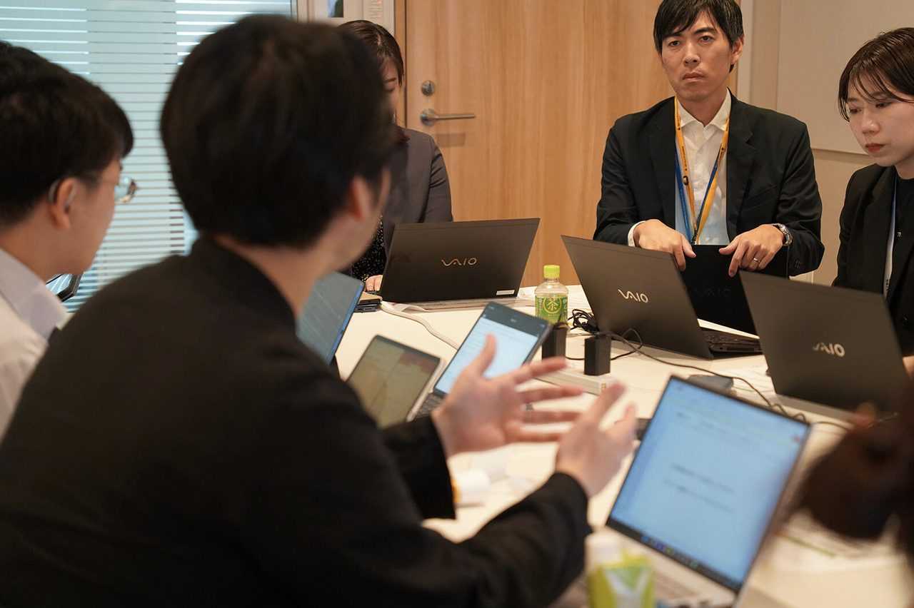

オフィスや街のユニバーサルデザインの検証と改善提案

取り組みの概要
日本橋室町エリアのD&Iの深化を図るべく、聴覚障害学生をはじめとした当事者参加により進めたユニバーサルデザイン検証会とその改善提案です。単なるバリアチェックではなく、参加した企業の一般ワーカーと障害当事者がペアになって対象施設を巡り、生活体験の違いを知り、改善方法を議論することを通して、継続的な課題発見・解決力につながることを目指しています。
- 連携先
- 一般社団法人 日本橋室町エリアマネジメント
- 期間
- 2024年2月〜
- 関わった学生の領域
- 建築学・福祉住環境学
- 主体教員
- 梅本舞子 准教授、山脇博紀 教授、堀池瞬 講師
- 学生の関わり方
- 課外活動として（学部3・4年生、大学院1年生）、卒業研究として（学部4年生）
学生の学びと関わり
学生の学び
実空間に対する改善提案とその実現にかかる条件の理解、将来の就業環境のイメージ。
学生の役目
検証・分析・改善提案。
求められた専門性
当事者視点によるバリアチェック。聴覚障害のみならず、視覚障害者や車いすユーザー、その他のワーカーの視点の理解。多様なワーカーが働くオフィスにふさわしい建築・空間デザインの提案。
連携先にとっての価値
障害当事者視点によるオフィス環境整備の知見の獲得。
成果
約2年間で、4企業のオフィスのほか、商業施設のトイレや地下道を対象に実施。現在も1企業のオフィスを対象に、バリアの検証・改善の提案を進めています。
連携先担当者の評価
※ コメントは掲載準備中です。一般社団法人 日本橋室町エリアマネジメント ご担当者
関連サイト
活動の写真
